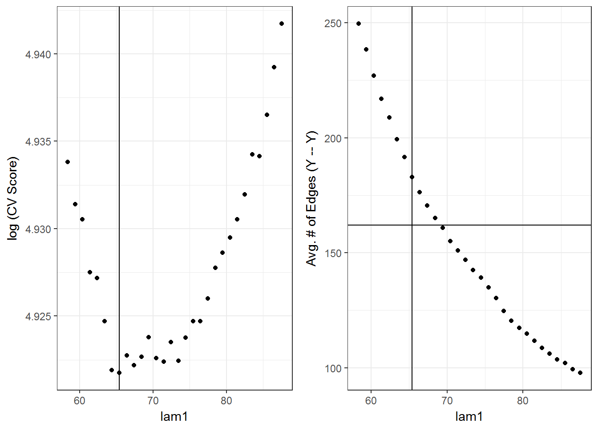
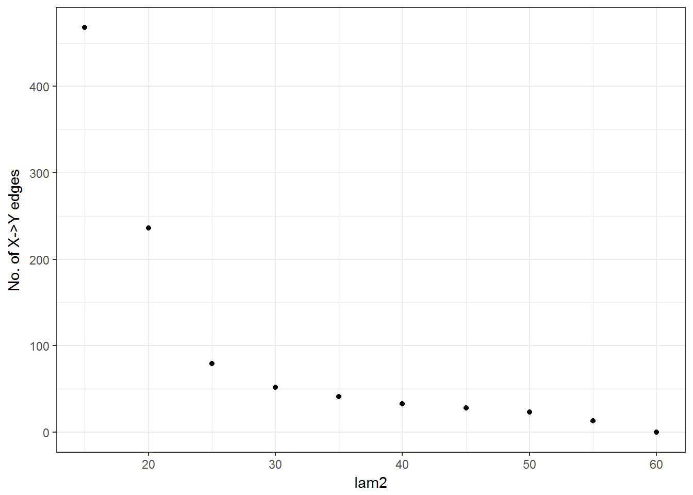
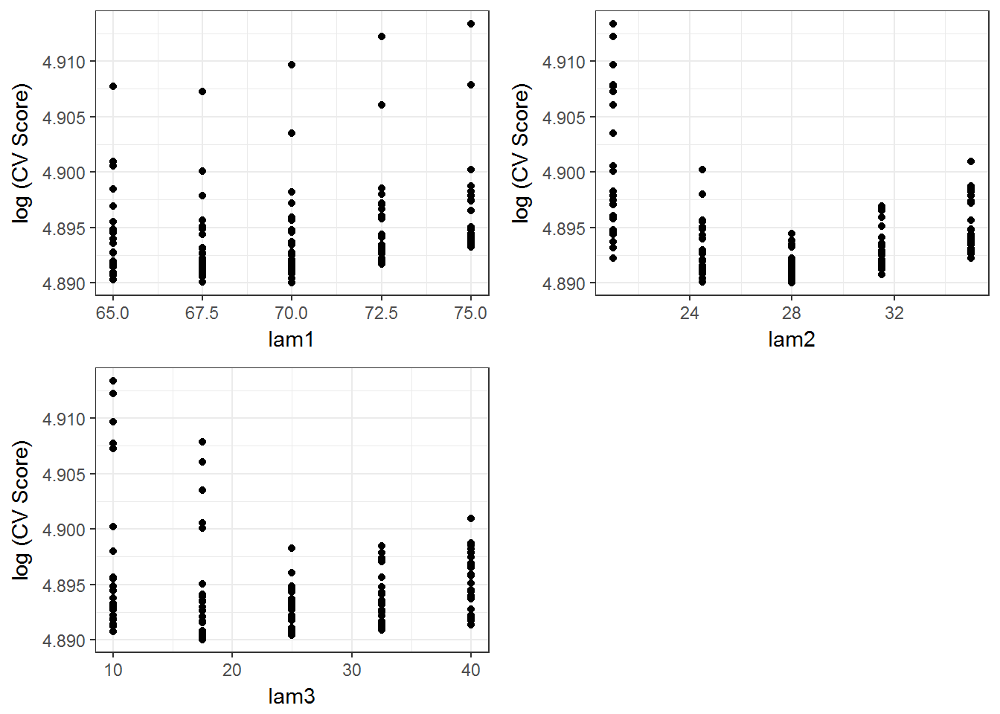

The three tuning parameters in Spacemap provides a rich framework for discovering conditional dependencies between variables in high dimensional biological assays; however, exploring a large tuning grid can be very computationally demanding. In this tutorial we illustrate a strategy for finding the neighborhood of good tuning parameters. The strategy finds suitiable neighborhoods of each tuning parameter by:
lam1. Identify best performing neighborhood of \(\lambda_1\).spacemap with input \(X\) and \(Y\) across a three-dimensional grid of \(\lambda_1, \lambda_2, \lambda_3\). The neighborhood of \(\lambda_1\) is specified from step 1. Explore a broad range of values for \(\lambda_2, \lambda_3\), which are parameterized as lam2 and lam3.We will illustrate the details of this strategy with an example from a simulation. The simulation has a known true network topolog, which affords an evaluation of whether this tuning strategy leads to reasonably tuned parameter selection.
Load network simulation 1 which has topology that mimics a genetic regulatory network. The simulation was generated under a multivariate normal assumption with 171 response variables with 14 predictor variables (i.e. \(Y\) = response, \(X\) = predictors). There are 10 predictors that have no \(x-y\) edges, 2 predictors with 13 \(x-y\) edges and 2 predictors with 14 \(x-y\)` edges. Among the response edges \(y-y\), there are 2 hub variables with degree 12 and 13, but the degree of the other response variables does not exceed 4. There are two disconnected components in the graph of size 94 and 81. The data has been standardized (mean-centered with unit variance) for all variables.
library(spacemap)
data(sim1)Extract data objects and report dimensions and sample size.
dat <- sim1[c("XY", "X", "Y", "Xindex", "Yindex")]
N <- nrow(dat$X)
P <- ncol(dat$X)
Q <- ncol(dat$Y)Extract the true partial correlation values, where non-zero partial correlations denote edges \(x-y\) and \(y-y\) edges.
trueParCor <- sim1$trueParCor
str(trueParCor)## List of 2
## $ xy: num [1:14, 1:171] -1.00e-01 -1.42e-16 0.00 0.00 0.00 ...
## $ yy: num [1:171, 1:171] 1.00 2.26e-18 2.51e-18 -1.46e-17 -1.65e-17 ...Tuning will be much faster if parallel computation is leveraged. Set up a parallel backend, in this case for a multicore machine. This code will use all available cores minus 1.
dopar <- FALSE
if (dopar) {
suppressPackageStartupMessages(library(doParallel))
suppressPackageStartupMessages(library(parallel))
ncores <- detectCores() - 1
cl <- makeCluster(ncores)
registerDoParallel(cl)
}lam1
Tune the lam1 parameter by fitting the space.joint function from the SPACE model to \(Y\) over a one-dimensional tuning grid. In the current implementation, the tuning parameter scales with the sample size. To find the right tuning scale, use a result from Meinshausen and Buhlmann (2006) which applies when when all \(Y\) have been standardized to have unit variance.
lam1start <- function(n, q, alpha) {
sqrt(n) * qnorm(1 - (alpha/ (2*q^2)))
}
lam0 <- lam1start(n = floor(N - N*.10), q = Q, alpha = 1e-5)
lam0## [1] 72.94889The value of \(\alpha\) is meant to control the false discovery rate; in our experience with this result, \(\alpha\) should be set very conservatively to obtain an initial value closer to the CV-selected lam1. In our case, we set alpha = 1e-5. Take the initial grid search to range from [80% of lam0, 120% of lam0].
#neighborhood parameter about lam0.
eps1 <- 0.8
#initial grid size.
ngrid <- 30
#grid
tsp <- expand.grid(lam1 = seq(lam0*eps1, lam0*(1 + (1 - eps1)), length = ngrid))
summary(tsp)## lam1
## Min. :58.36
## 1st Qu.:65.65
## Median :72.95
## Mean :72.95
## 3rd Qu.:80.24
## Max. :87.54In preparation of 10-K cross validation, we encourage the user to determine the split of the data since the data may have some special underlying population structure that needs to be balanced across the hold-out sets.
#for generating cross-validation folds
library(caret)
#sample size
N <- nrow(dat$X)
#number of folds
K <- 10L
set.seed(265616L)
#no special population structure, but create randomized dummy structure of A and B
testSets <- createFolds(y = sample(x = c("A", "B"), size = N, replace = TRUE), k = K)
trainSets <- lapply(testSets, function(s) setdiff(seq_len(N), s))
nsplits <- sapply(testSets, length)Conduct the cross-validation of the SPACE model through the cvVote function. It takes as input the data \(Y\), how \(Y\) should be split for testing and training, an indication to to learn \(y-y\) edges through the SPACE model, and finally a grid of tuning penalties.
cvspace <- cvVote(Y = dat$Y,
trainIds = trainSets, testIds = testSets,
method = "space", tuneGrid = tsp) The tuneVis function plots several diagonostic metrics for tuning the models. Below the plot on the left shows the log(CV score) curve aross lam1, where the vertical line denotes the minimizer. The CV score curve has an approximately convex shape with a little bit variability at the valley. To the right the average number of y–y edges across CV training splits is shown to decrease with increasing lam1. The intersecting lines indicate the optimal lambda produces a CV.vote SPACE model of 162 y–y edges, which is about 30 edges lower than the average no. of edges due to the model stabilizing influence of the CV.vote procedure.
cvVis <- tuneVis(cvOut = cvspace,
testSetLen = nsplits,
tuneParam1 = tsp$lam1,
tuneParam1Name = "lam1")
library(gridExtra)
grid.arrange(cvVis[[1]] +
geom_vline(xintercept = cvspace$minTune$lam1),
cvVis[[3]] +
geom_hline(yintercept = nonZeroUpper(cvspace$cvVote$yy,0)) +
geom_vline(xintercept = cvspace$minTune$lam1)
, ncol = 2)
Since the true network is known, we can evaluate the learned SPACE network against the truth.
spacePerf <- cvPerf(cvOut = cvspace, trueParCor = sim1$trueParCor, method = "space")[1:3]
spacePerf## power fdr mcc
## 0.7820513 0.2469136 0.7648620The “mcc” refers to an average of the power and FDR. The power is reasonable, but the FDR is a little high. Let’s see the effect of conditioning on \(x\) variables through the spaceMap model.
lam2 and lam3
Now shifting our attention to tuning all three tuning parameters, we can make use of the information from step 1 to reduce the grid search time. Input a neighborhood of \(65 \leq \lambda_1 \leq 75\) into the 3-D grid search since we know that produces a reasonable output for the \(y--y\) portion of the network. Choosing an initial neighborhood for \(\lambda_2, \lambda_3\) is guided by practical considerations such as how many \(x-y\) edges one might expect to see at maximum. In our case, we know there are only 14 \(x\) variables and so we do not expect there to be more than say, 200 \(x-y\) edges, but no less than 50 \(x-y\) edges in a sparse network. Since we anticipate there existing a few hubs in the network, fix \(\lambda_3=15\). Now we can quickly obtain an approximate lower bound for \(\lambda_2\) by applying the initFit function, which does not do any cross-validation, but simply fits spacemap across the defined tuning grid once.
tmap1 <- expand.grid(lam1 = cvspace$minTune[[1]],
lam2 = seq(15, 60, by = 5),
lam3 = 15)
ntmap1 <- initFit(Y = sim1$Y, X = sim1$X, method = "spacemap", tuneGrid = tmap1)
library(ggplot2)
qplot(x = tmap1$lam2, y = ntmap1$nxy,
ylab = "No. of X->Y edges", xlab = "lam2") +
theme_bw()
It is evident that restricting our attention to 20< lam2< 35 is the best course of action to limit the number of \(x-y\) edges to the range we are targeting. Now that we have reasonable ranges for lam1,lam2, we also need to define a range for lam3, which is helpful for encouraging \(x\) hub selection. We could use the initFit function to guide this process, but we will rely on what we expect to see—hubs are likely to exist in the network—such that the lower bound for lam3 should be sufficiently far from 0. Now define the 3-D tuning grid:
tmap2 <- expand.grid(lam1 = seq(65, 75, length = 5),
lam2 = seq(21, 35, length = 5),
lam3 = seq(10, 40, length = 5))Apply cross validation with spacemap to learn the best network in the tuning grid. This will take about 4 minutes on a single processor.
cvsmap <- cvVote(Y = dat$Y, X = dat$X,
trainIds = trainSets, testIds = testSets,
method = "spacemap", tuneGrid = tmap2)The CV.vote spaceMap network is encoded into adjacency matrices cvsmap$cvVote[c("xy", "yy")]. The best penalties from the tuning grid are:
cvsmap$minTune## $lam1
## [1] 70
##
## $lam2
## [1] 28
##
## $lam3
## [1] 17.5Next we diagnose the suitability of the tuning grid based on the output through tuneVis.
cvVis1 <- spacemap::tuneVis(cvOut = cvsmap, testSetLen = nsplits,
tuneParam1 = tmap2$lam1, tuneParam1Name = "lam1")
cvVis2 <- spacemap::tuneVis(cvOut = cvsmap, testSetLen = nsplits,
tuneParam1 = tmap2$lam2, tuneParam1Name = "lam2")
cvVis3 <- spacemap::tuneVis(cvOut = cvsmap, testSetLen = nsplits,
tuneParam1 = tmap2$lam3, tuneParam1Name = "lam3")Visualizing the CV scores across the 3-D grid shows the selected tuning penalties are away from their respective boundaries, which suggests the grid is suitable. If the selected penalty was on or near the boundary, it may suggest to increase (decrease) the upper (lower) bound of the penalty in the grid.
library(gridExtra)
grid.arrange(cvVis1[[1]], cvVis2[[1]],cvVis3[[1]], ncol = 2)
This whole tuning process took 5.32 minutes. The network learning performance of spacemap is listed below
smapPerf <- cvPerf(cvOut = cvsmap, trueParCor = sim1$trueParCor, method = "spacemap")[1:8]
smapPerf## power fdr mcc powerXY fdrXY powerYY
## 0.76666667 0.07471264 0.84049251 0.87037037 0.07843137 0.73076923
## fdrYY mccYY
## 0.07317073 0.82133452The spaceMap model dramatically lowers the \(y-y\) FDR when compared with SPACE in this example. The FDR is lowered from over 25% to below 8%, while experiencing a small drop in \(y-y\) power. This benefit is beleived to be because spaceMap learns the \(x-y\) edges that encode predictor variable perturbations to the response varialbes. With a relatively high \(x-y\) power and limted overall FDR, spaceMap shows its added-value.
Completion of this vignette ought to have taught how to tune penalty parameters to near optimal settings for the spacemap model. We recommend looking at the next vignette which illustrates how to have more precise control of the FDR through an ensembled network.